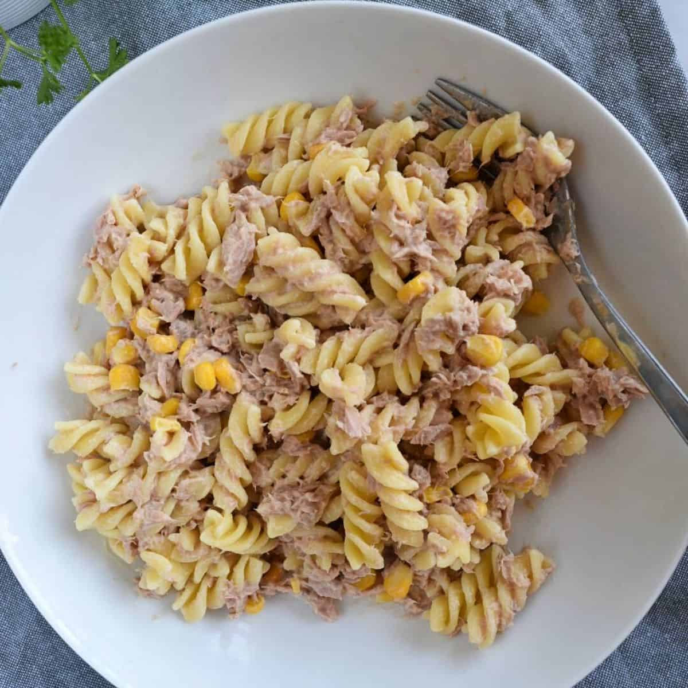

Tuna Mayo Pasta

Description
Fusili pasta mixed with tuna, sweetcorn and drowned in mayonaise
Ingredients
- 1 Bowl Fusili Pasta
- 2 Tins Tuna in Spring Water
- 1 Tin Sweetcorn
- 3 Dollops Mayonaise
Steps
- Boil a kettle and pour some water and salt into the saucepan and place over a hot stove
- Put the pasta into the pot and pour in the boiling water from the kettle, then place the lid on the saucepan
- Cook the pasta in the boiling water for 15 minutes, making sure not to let the water boil over the pan
- Once cooked, empty the water from the saucepan and replace with cold water to cool the pasta
- Empty the cold water from the pan and then add the rest of the ingredients, then stir